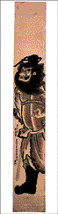

<!--This file created 10/16/97 5:55 PM by Claris Home Page version 2.0-->
<HTML>
<HEAD>
   <TITLE>Mpls Inst Arts - World Mythology: Shoki, the Demon
   Queller</TITLE>
   <META NAME="GENERATOR" CONTENT="Claris Home Page 2.0">
   <X-SAS-WINDOW TOP="67" BOTTOM="480" LEFT="32" RIGHT="562">
<HEAD>
</HEAD>
<BODY TEXT="#111111" LINK="#660000" ALINK="#AA0000" VLINK="#444444" BACKGROUND="backgroundbrown.gif">

<P><FONT SIZE="+2">Curriculum Materials: World Mythology</FONT>
<HR>
<!--------Top Myth Menu------><TABLE BORDER="3">
   <TR>
      <TD>
         <P><CENTER><A HREF="introduction.html#top">Introduction</A>
         ~ <A HREF="mythbyimage.html#top">Myth by Image</A> ~
         <A HREF="culturelist.html#top">Myth by Culture</A> ~
         <A HREF="myths.html#top">Mythological Comparisons</A> ~
         <A HREF="glossary.html#top">Glossary</A> ~
         <A HREF="suggestedreading.html#top">Suggested Readings</A> ~
         <A HREF="downloadables.html#top">Downloadable Resources</A>
         ~ <A HREF="../tta/classroom_materials_order.html">How to Order</A> ~
         <A HREF="myth_evaluation.html#top">Your Comments Wanted</A>
         ~ <A HREF="#Story">Story</A> ~
         <A HREF="#Background">Background</A> ~
         <A HREF="#Questions">Questions</A></CENTER>
      </TD></TR>
</TABLE>
<HR>
<A NAME="top"></A>&nbsp;<TABLE BORDER="0" CELLSPACING="10" WIDTH="445">
   <TR>
      <TD>
         <P><A HREF="full_jpg/24.jpg"></A><BR>
         
         <B>Image 24</B><BR>
         
         <FONT SIZE="+2">Shoki, the Demon Queller</FONT><BR>
         
         18th century<BR>
         
         Okumura Masanobu<BR>
         
         Japan (1686-1764)<BR>
         
         Ink on paper<BR>
         
         22 x 4 inches<BR>
         
         Gift of Anonymous St. Paul Friend 1975<BR>
         
         
         <HR>
         <A NAME="Key"></A></P>
         
         <P><CENTER><B>Key Ideas</B></CENTER></P>
         
         <UL>
            <LI>According to Japanese folklore, the spirit of the
            physician Shoki (show-key) was able to scare away demons.
            
            <LI>Families with male children hung images of Shoki
            outside their houses to ward off evil spirits during the
            Boys' Day festival.
            
            <LI>Long narrow <A HREF="glossary.html#PRINT">PRINTS</A>
            were designed to hang on the wooden pillars in
            traditional Japanese homes.<BR CLEAR="left">
            
         
         </UL>
         
         <P>
         <HR>
         </P>
         
         <P><CENTER><A NAME="Story"></A><B>Story</B></CENTER></P>
         
         <P>During the early T'ang (tong) dynasty, Shoki was a
         physician in the province of Shensi (shen-see), China. He
         was considered very ugly. Hoping to advance his career, he
         took the examinations required to enter government service.
         Although he performed brilliantly, Shoki's dreams of
         advancement were shattered. Some say Shoki was cruelly
         cheated out of first place. Others say he was awarded first
         place by the examiners, who praised his work, saying it was
         equal to that of the wisest ancients. But when Shoki was
         presented to the court, the emperor rejected him because he
         was so ugly.</P>
         
         <P>In shame, Shoki took his own life on the steps of the
         imperial palace, right in front of the emperor. Overcome
         with remorse, the emperor ordered that Shoki be buried with
         the highest honors, wrapped in a green robe usually reserved
         for members of the imperial clan. In gratitude, Shoki's
         spirit vowed to protect any ruler against the evil of
         demons.</P>
         
         <P></UL>
         <HR>
         </P>
         
         <P><CENTER><A NAME="Background"></A><B>Background</B>
         </CENTER></P>
         
         <P><B>Japan and China</B><BR>
         
         When the Japanese imported Buddhism from China in the 6th
         century, they also assumed many other aspects of Chinese
         culture, including their mythology. The popular story of
         Shoki was adopted from China, where he was known as Chung
         Kuei (chung guay). During the Edo (ED-oh) period in Japan
         (1600-1868), families began to hang banners depicting Shoki
         inside and outside of their houses during the Boys' Day
         festival. Boys' Day is celebrated on the fifth day of the
         fifth month of the lunar year. According to ancient
         tradition, this is a day when evil spirits and bad luck
         abounds. Images of Shoki ward off danger from the homes of
         families with male children.</P>
         
         <P><B>Rising Merchant Class</B><BR>
         
         During Japan's Edo period, great cities and a new,
         prosperous merchant class flourished. Middle-class tastes
         were significantly different from those of the Buddhist
         priests and shogunate (the government under a shogun) that
         had dominated artistic patronage in the past. Members of the
         new middle class preferred scenes of everyday life and
         illustrations of folk stories like Shoki the Demon Queller.
         By the 18th century many artists depicted Shoki in prints
         for this new audience.</P>
         
         <P><B>Prints</B><BR>
         
         As a result of this new patronage and the development of a
         many-colored woodblock printing process, an abundance of
         printed materials were made available to all. Novels,
         pictures, and poetry helped inform the Japanese of their own
         cultural heritage as well as artistic styles and themes
         imported from China. For commoners who could not afford a
         painting, these new prints offered an affordable
         alternative.</P>
         
         <P>The long narrow format of
         <A HREF="glossary.html#PILLAR">PILLAR PRINTS</A>, achieved
         by pasting together two sheets of paper, was popular and
         practical. Whereas most prints were pasted into albums,
         pillar prints were hung in the home. The traditional
         Japanese house had very few walls, and the sliding doors
         that divided the rooms were made of paper. Structural wooden
         pillars were the only place where pictures could be hung.
         </P>
         
         <P><B>Masanobu</B><BR>
         
         The artist Masanobu (maa-saw-no-boo) (1686-1764) invented
         the popular pillar print format. He was one of Japan's most
         important painters and printmakers during the 18th century.
         By his own account, Masanobu was responsible for dozens of
         technical and stylistic innovations in printmaking.</P>
         
         <P><B>Shoki, the Demon Queller</B><BR>
         
         Shoki typically appears as a portly bewhiskered man. He
         wears scholar's robes, a hat, and heavy knee-high boots and
         carries a large sword. His large eyes, bulbous nose, and
         fierce expression are also characteristic features. In this
         print Shoki rounds a corner in hot pursuit of a demon. His
         eyes bulge out as he spies his prey. His left hand tenses,
         while his right reaches for his long broad sword.</P>
         
         <P>Masanobu deftly varies his use of line to convey mood,
         texture, and mass. The thick, wavy, jagged outlines of
         Shoki's drapery capture his intense vitality. The fine
         delicate lines of his wild windblown beard and hair contrast
         the thicker lines of his bushy eyebrows and mustache.
         Masanobu uses dramatic shading in light and dark to
         emphasize the bulk of the figure.</P>
         
         <P>Masanobu creatively uses this narrow vertical format to
         enhance his storytelling. Shoki does not fill the length of
         the print, but is relegated instead to the lower two-thirds.
         This position emphasizes his short and portly stature. By
         cropping from view much of Shoki's arms, one leg, and the
         ends of his hair and beard, Masanobu gives the impression of
         catching a quick glimpse of the elusive demon queller.</P>
         
         <P>The characters (the
         <A HREF="glossary.html#SYMBOL">SYMBOLS</A> used in the
         Japanese writing system) placed in the lower left corner of
         this pillar print of Shoki, are the artist Masanobu's studio
         name, Hogetsudo (hoe-get-sue-doe), and his signature,
         Okumura Bunkaku Masanobu (oh-ku-mer-ah boon-ka-ku
         maa-saw-no-boo).</UL>
         <HR>
         </P>
         
         <P><CENTER><B><A NAME="Questions"></A>Discussion
         Questions</B></CENTER></P>
         
         <P><B>Look</B><BR>
         
         <B>1.</B> <B>Tell the story of <I>Shoki, the Demon
         Queller</I>. </B>What is Shoki doing in this picture?
         <B>(Running!)</B> Can you find his sword? <B>(Hangs down to
         the left of his boot.)</B> <B>Explain the format of
         <A HREF="glossary.html#PILLAR">PILLAR PRINTS</A>, made to
         hang on narrow pillars in a traditional Japanese home. </B>
         Why would Okumura Masanobu
         <A HREF="glossary.html#CROP">CROP</A> off part of Shoki's
         body when he made this print? <B>(To give the impression of
         a fleeting glimpse of Shoki on the move.) Why might Masanobu
         leave so much space at the top of this print? (To emphasize
         Shoki's short, portly stature.)</B></P>
         
         <P><B>2.</B> In the story, Shoki is considered very ugly.
         How has Masanobu made him look ugly? <B>(Unkempt hair,
         bulging eyes, bulbous nose, fierce expression.)</B> Does he
         look scary? Why or why not?</P>
         
         <P><B>3.</B> Traditional Japanese ink paintings rely on
         dramatic lines to capture a subject. What kinds of lines do
         you see in this <A HREF="glossary.html#PRINT">PRINT</A>?
         Where are thick lines? <B>(Robe, hat, boots, eyebrows, and
         mustache.)</B> Where are thin lines? <B>(Hand, facial
         features, hair and beard, decoration on robe, sword.)</B>
         </P>
         
         <P><B>4.</B> Japanese artists sign their work, just as
         artists in other parts of the world do. Find Okumura
         Masanobu's signature on this print. <B>(Lower left
         corner.)</B></P>
         
         <P>
         <HR>
         <BR>
         
         <B>Think</B><BR>
         
         <B>1.</B> In the story of Shoki, depicted in this print,
         Shoki's spirit took on the role of demon queller after the
         emperor, sorry for having rejected Shoki, buried him with
         highest honors. Shoki's spirit was grateful for the
         emperor's remorse and belated respect. Do you think Shoki
         should have been grateful? Why or why not? Have you ever
         forgiven someone for mistreating you? What happened? Was it
         easy to forgive?</P>
         
         <P><B>2.</B> During the Edo period in Japan, families hung
         pictures of Shoki inside and outside their houses to protect
         their male children during the Boys' Day festival. Why do
         you suppose Shoki came to be considered protection for boys?
         <B>(Perhaps because Shoki's real life role of scholar and
         his afterlife role as protectorate were male-dominated roles
         in Japan, roles considered inappropriate for girls or
         women.)</B></P>
         
         <P><B>3.</B> During the Edo period,
         <A HREF="glossary.html#PRINT">PRINTS</A> like this one were
         popular among the Japanese middle class because they were an
         affordable alternative to original paintings. Do we have an
         affordable alternative to original art today? What is it?
         <B>(The poster!)</B></P>
         
         <P><B>4.</B> Do we celebrate Boys' day? Girls' day? Should
         we?</P>
         
         <P><B>5.</B> Shoki was discriminated against because of the
         way he looked. Can you think of other stories involving
         discrimination based on looks? <B>(Beauty and the Beast, the
         Ugly Duckling, Phantom of the Opera, Elephant Man, the
         Hunchback of Notre Dame, Rudolph the Red-Nosed Reindeer.)
         </B> Have you ever been discriminated against for the way
         you look? How did it feel? How was it resolved? Do you judge
         others based on their looks?</P>
         
         <P>
         <HR>
      
      </TD></TR>
</TABLE> <TABLE BORDER="3">
   <TR>
      <TD>
         <P><CENTER><A HREF="introduction.html#top">Introduction</A>
         ~ <A HREF="mythbyimage.html#top">Myth by Image</A> ~
         <A HREF="culturelist.html#top">Myth by Culture</A> ~
         <A HREF="myths.html#top">Mythological Comparisons</A> ~
         <A HREF="glossary.html#top">Glossary</A> ~
         <A HREF="suggestedreading.html#top">Suggested Readings</A> ~
         <A HREF="downloadables.html#top">Downloadable Resources</A>
         ~ <A HREF="../tta/classroom_materials_order.html">How to Order</A> ~
         <A HREF="myth_evaluation.html#top">Your Comments Wanted</A>
         ~ <A HREF="#Story">Story</A> ~
         <A HREF="#Background">Background</A> ~
         <A HREF="#Questions">Questions</A></CENTER>
      </TD></TR>
</TABLE></P>
</BODY>
</HTML>
